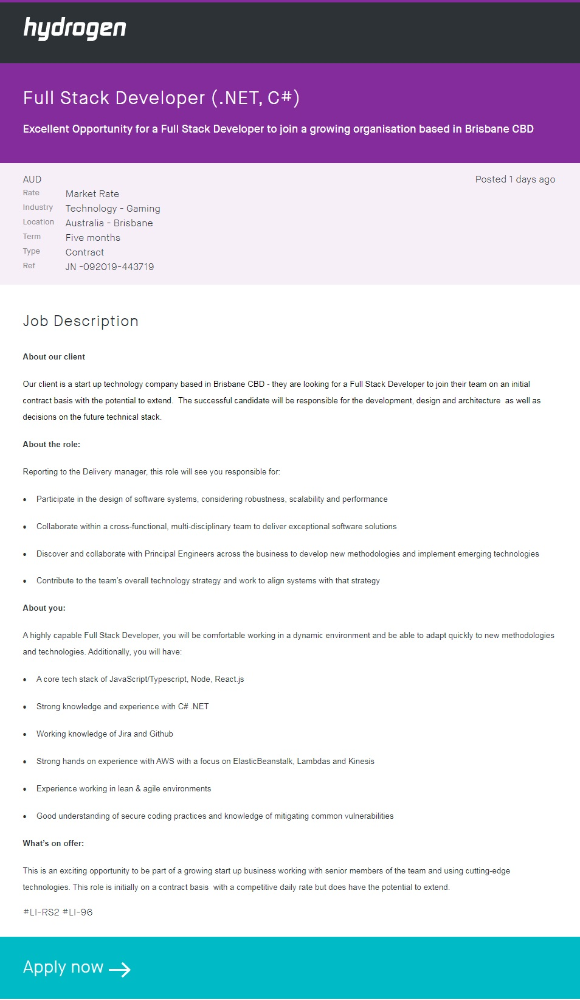

My name is Jess Cramb, originally from Sydney but now living in Brisbane. I am of Australian Aboriginal decent, with my mother being from the Monaro Ngarigo tribe and my father being from the Biripi tribe. Whilst we do still speak a few words in our language, it is unfortunately not enough to pull together full sentences.
I have spent the majority of my professional life working in a Business Administration setting with a few retail jobs and an overseas working holiday thrown in over the years. During this time I found myself repeatedly gravitating towards the IT aspect of my role, specifically the programming and coding. This pattern made me reconsider my career choices and so I have taken up further education and am currently working towards a Bachelor of Information Technology so that I can equip myself with the knowledge and skills to embark on a new career path.
When I’m not working, studying or chasing after a one year old I like to spend time with my feather-baby Nibbler, who is a Nanday Conure. Conures are a medium sized parrot that love scritches, cuddles and having a good chat. Usually Nibbler is just babbling in birdy gibberish but he does have quite the vocabulary too, some phrases that I often hear include “peek-a-boo”, “good boy”, “step up”, “what you doing bubby?” and “kiss kiss”.
I am very excited to be continuing my education journey with RMIT and all my fellow students and cannot wait to be able to apply all my new skills to the real world.
Jessica Cramb
Student Number: S3813728
Email: S3813728@student.rmit.edu.au
Most people have some level of interest in Information Technology (IT), from end users who spend hours scrolling through social media to IT professionals who have built a career on assisting in the development of software, hardware and infrastructure needed to have information systems. For me the interest in IT began in high school during a particular computer science class in which we were taught how to build a basic database using Microsoft Access, this early introduction incited a life-long fascination with how IT worked. Since high school I have worked in a number of roles, most which include business administration or retail assistance. Regardless of my role, I would find myself examining the particular software application in an attempt to better understand how all the pieces fit together in the back end and ascertain if there was room to improve the user experience to increase efficiency. Once this pattern of investigation became apparent I came to realise that the right career for me was actually in the IT stream and not business administration and so I enrolled in university to further my education and gain the skills needed to pursue this new career path.
Initially I had been working towards a Bachelor of Information Systems through Swinburne University and during this time had learnt a number of IT concepts and had been introduced to some programming languages. I have a basic understanding of project development requirements including ERDs, wireframes, SDLC and have dabbled a little in HTML, CSS and Javascript. However I had taken a leave of absence from this degree to start a family and whilst on leave had a chance to reflect on my study, which made me realise that the degree was actually taking me down a more business administration path. Therefore when I recommenced my study I made a slight shift over to RMIT to instead work towards a Bachelor of Information Technology; this degree appears to offer knowledge that is more in line with my plans to transition to a career as a programme developer.
Upon completion of my Bachelor of Information Technology I hope to increase my technical competency as well as build relationships with fellow IT enthusiasts. From a technical perspective I wish to gain an understanding of the skills and strengths of different areas of IT, along with an appreciation of how the various aspects of the IT discipline work together to deliver outcomes. In addition I wish to strengthen my ability to perform tasks required of a software developer.
Finding the ideal job has been a challenge, mostly due to not previously understanding the vast options for careers in the IT field. I knew that the ideal job for me includes a balance of sitting at a computer, music playing in my ears whilst typing out lines of code and plenty of social interaction with colleagues and stakeholders. Having identified the basic desires of my ideal role I have been able to narrow my search to Software Programmer or Full Stack Developer.
My search for the ideal job has lead me to the role of Full Stack Developer (.NET, C#) offered through Hydrogen Group, as shown below and found here.
This role requires the application of skills across a range of information technology (IT) fields to assist in the development of software solutions that will meet client needs. This role would require effective collaboration with other professionals from various IT backgrounds to design, develop and deliver outcomes.
The need to apply my own specialised skills and knowledge whilst also working with multiple IT disciplines is what makes this role so appealing. I wish to have a career that allows me to exercise my aptitude for coding, but also offers the opportunity to expand my knowledge base into other areas of IT so that if required I could develop a working product independently.
To be an eligible candidate for this role I would need to demonstrate a working knowledge of a number of programming languages including, but not limited to, JavaScript, C#, .NET and Git. In addition to having sound technical expertise I would also need to possess strong interpersonal skills to ensure the effective communication and collaboration with colleagues and clients, this would ensure a smooth working process to deliver required products and services.
I currently possess strong interpersonal skills having developed these over the years of my working career. In my current role as team leader I utilise these skills on a daily basis when corresponding with members around matters related to their membership, along with conferring with my team around ongoing workload priorities to ensure tasks are completed in a timely manner. In addition I communicate with colleagues in the broader organisation to assist in any reporting or data collection requirements that pertain to their role, and liaise with the IT providers for the organisation to ensure our systems are working correctly and discuss the ability to improve current processes. My technical skills are currently very limited as these have been self-taught when the need emerged; I often only investigate the required coding to the point of finding a solution and have not ventured further. On rare occasions I have also dabbled in non-required coding, but again this was at a very basic level.
To pursue my new career I plan to build on my technical skills, particularly around programming languages, but also build an understanding and appreciation of all aspects of IT so that I can better contribute to projects. To attain the base level of understanding and be pointed in the right direction for honing programming skills I will complete the Bachelor of Information Technology through RMIT. I plan to also expand my education through the use of other online training tools such as www.udemy.com.
To better understand my learning and personal style I completed the Myers-Briggs Type Indicator®, a Learning Style test and the True Colours Personality Test, outcomes of these are below;
I am the Mediator (INFP-T)
The mediator is someone who often looks for the silver lining in situations. They tend to approach situations based on their principles and values and this means that they are not drawn in by rewards or punishments. As a mediator I find myself focusing my attentions and energy on a select few rather than large groups of people and prefer to have more meaningful conversations with few close friends and confidants than a lot of shallow conversations with bigger groups. Further I tend to dream and fantasize about how things could be better or different, although this can lead to being withdrawn if I get too carried away. I believe that the qualities of a mediator will be of great benefit to a group situation as I can bring a diplomatic approach to group work to ensure things run smoothly whilst also being a bit of dreamer I feel that I will be able to contribute with brain storming and idea planning. I believe that groups need to have a good combination of the main characteristic groups and so when forming groups its important to have other personalities that will be both complement and challenge my view of the world.
I am an auditory learner!
Results from this test reveal my learning style to be:
As an auditory learner I find it easier to retain information that I have heard, having details and instructions spoken to me, as opposed to reading or watching, is much easier to follow and remember. Interestingly it is said that auditory learners often hum or talk to themselves when bored and this can cause others to assume you are not paying attention. These results certainly resonate I do prefer verbal instruction, even if it's not completely clear to begin with as I enjoy the challenge of filling the gaps in the instructions. I also often talk to myself at work and love to hum tunes when I'm just going about my day, regardless if I'm bored or not. I feel that knowing what learning style works for me, I have already eliminated the obstacle of trying to find the best approach to my learning. knowing that I am an auditory learner will mean that I can better contribute to the group by taking on any auditory tasks and give better focused participation. I believe that having a good mix of learning styles in any working group is a great advantage, as each style would bring its own strengths that can be exploited to contribute to the bigger team outcomes.
My colour is purple!
Purple individuals usually are:
Having taken this test twice now I should state that my results have differed the second time around. After my first test I had stronger points in the analytical, logical realm as opposed to the caring, emotional traits. I believe the difference in these results is due to becoming a mum just over a year ago, this huge change in my life has definitely shifted my focus on what's important in life. Having said that I am very happy with the results from this recent test and agree that all traits listed above resonate strongly with me. A purple personality is someone who is detail-orientated and prefers being organised, which can make me predictable. I thrive in an environment where responsibilities and expectations are clearly defined as this gives me a plan to work towards. I feel that these strengths will be a fantastic contribution to my team as I do enjoy keeping an organised plan in place and ensuring that everyone is clear on what their roles and responsibilities are. As a rule follower I will also likely be the one to read up on how something should be done, which could be of benefit at some stage. Given that I am someone who follows rules and likes to stick to structured plans I believe that it would be beneficial to be teamed with people who are happy to appreciate this approach but prefer to be a little more spontaneous, I know from experience that I can get caught up in my thoughts and overcomplicate matters and needed someone to snap me out of the loop. So a good balance between the two approaches to projects would be ideal.
This project will see the development of a smart phone application that will give users the means to reduce their carbon footprint by lowering their contributions to landfill. To achieve this users will have access to tools that allow them to easily plan meals and draw grocery lists based on meal plans, thus purchasing only what is required for the plan. In addition the application will provide educational resources in relation to sustainable living, which includes tips and links to companies that base their business model on sustainability. This application is yet to be named.
It is no secret that the environment and its ecosystems are suffering, this has been an issue for many years however is becoming more and more prevalent in political and social discussions. A key contributor to the current state of the environment is greenhouse gases, with one cause of these gases being from the decomposition of plastics. To combat this issue there needs to be a monumental movement away from reliance on plastic, which will in turn reduce the demand for new plastics to be made and hopefully one day change the mindset of big companies who produce tonnes of plastic packaging every year. This target audience for this application is everyday people as change is made by the masses.
At it's core, this application is an intuitive meal planner and grocery list developer. The concept of application is that by planning meals and only purchasing the required ingredients for the plan, you can reduce food waste. In addition to this, the application will have easy to follow lifestyle adjustments that will make a longer term change to landfill contribution and improve environmental awareness that will hopefully drive consumer choices in all areas of life. To further assist customers in their journey to a more sustainable lifestyle, the application will provide information on companies that source greener grocery and product options e.g. Biome, The Source Bulk Foods or local farm vendors.
The application will feature the following functionality:
The meal planner would give user ability to plan meals for as many dates into the future as they wish, this will include as many meals a day as needed. This function would be based on a calendar tool so that customer can see actual days of the week. User will have the ability to mark that they have actually prepared a planned meal and this will be used to update other features, as listed below.
The shopping list feature will automatically calculate the ingredients required from the meal plan for the specified period of time, giving the user the option between one week, two weeks, three weeks or a month. This feature would also draw on the pantry inventory feature to determine if the user already has some stock on hand. To assist in keeping the pantry list updated this feature will have a 'check out' function that will move items from the grocery list to the pantry list, amalgamating any duplicate entries.
Pantry record keeping will be updated whenever the user 'checks out' on their grocery list User also has the ability to manually update this. Further this will be updated each time a planned meal is flagged as prepared, reducing the pantry quantity of ingredients used in the meal.
Recipe function will allow user to create or upload recipes to the application. These will then need to have their ingredients list amended to ensure they match the ingredients data in all functions.
Educational section will include an array of information from statistical data on current environmental pressures, for example endangered wildlife directly impacted by pollution, the idea here is to help motivate individuals by confronting them with the realities of household waste and it's possible impact. Other less confronting features will include information on the benefits of sustainable living, a big motivator for me being the cost savings by buying in bulk or not need to replenish disposable items such as straws or dishwashing sponges as well as promoting a healthier lifestyle. A big part of the educational function will be the tips on how to make more sustainable choices, with practical applications, for example use spices bought in bulk instead of buying recipe bases that come in single use packaging or how to compost spoiled produce so the user does not have to throw it in the bin.
Links to local or online stores that sell sustainable products, this could include grocery stores, products or even recycling initiatives that can be found in the local area, for example Biome, The Source Bulk Foods, Terracyle. This would provide users with the opportunity to explore alternative options for purchasing their products.
Last but not least, a rewards system that commends user on specified tasks. These will serve as a positive motivator for the customer to continue making positive choices and use the application. This would be in the shape of rewards badges and will be link to pre-determined goals.
The hardware needed for this project would be mainly PCs as this is heavily a coding exercise. Mobile application building software would need to allow the development of an application that is compatible across multiple platforms including iOS, Android and Windows. One choice for the software would be Appery.io as this cloud based software has many beneficial features including large storage, visual editor and ability to produce a multi-platform product. A great open source tools that would be relevant for this project would include GitHub. This website features a wealth of information in the form of other users and their willingness to assist and share their knowledge with others.
In order to build this application and ensure that the content is high standard and actually useful there will be a number of different skillsets required. In terms of the technical requirements we will need a software engineer that is proficient in programming languages related to smart phone application software, such as java, swift, JavaScript, PHP, C#, to name a few. A research officer wold also be required to ensure that the educational content and affiliate links to external resources and providers is current and relevant to the targeted audience. Lastly the user experience in terms of functionality and aesthetics is crucial to ensure the success of this application above other similar applications and so a sound and relevant graphic interface designer would be required to achieve positive user experience.
The most tangible measure for success of this application would be the reduction of reliance on plastic packaging by companies, a great example would be the unnecessary use of plastic tubs and wrappers to package fresh fruit in major grocery stores, seeing this eliminated big players would be a huge difference. The ultimate goal with this application is to contribute to the sustainability movement enough that companies are impacted by the environmentally smart choices that consumers make, so much so that the companies re-think their packaging and opt for greener alternatives. That is the bigger picture. On an individual level I hope that the shift in lifestyle will help customers to find a deeper appreciation for their health and happiness and rekindle a love for the food that they consume.